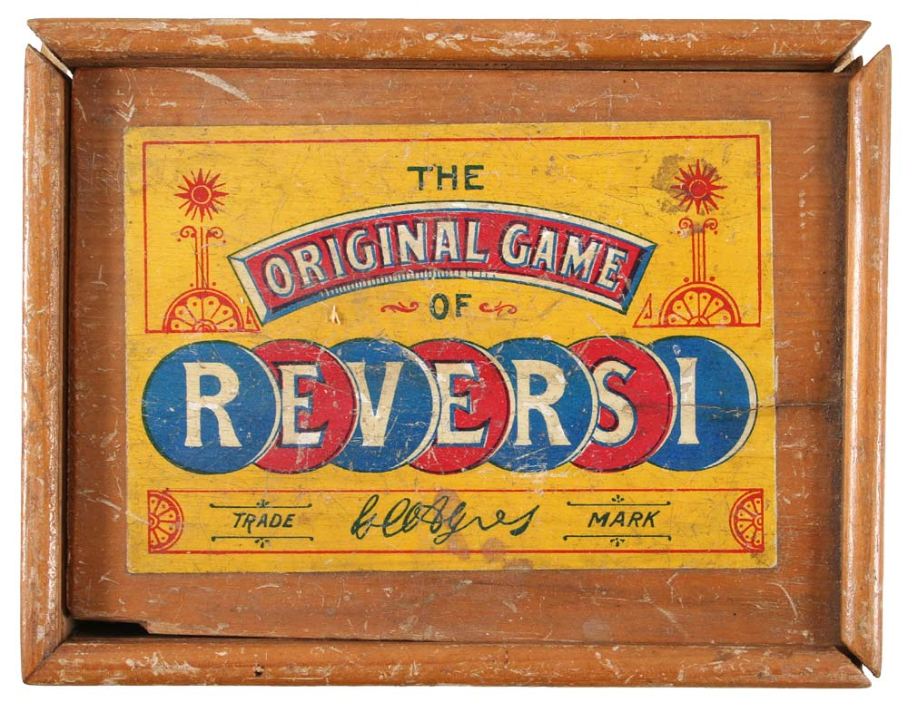

Сначала реверси придумали двое британцев — порознь, но почти одновременно. Дело даже дошло до суда. В 1876 году Джон Моллетт представил игру The Game of Annexation («Игра в захват») с крестообразным полем.
В 1883-м Льюис Уотерман предложил покупателям развлечение под названием Reversi, в котором поле было квадратным, но игровая механика та же, что и у Моллетта.
Название, созвучное английскому to reverse — «переворачивать», приглянулось коммерсанту Фреду Эйрзу. И вскоре уже Эйрз зарегистрировал патент на аналогичную игру под маркой Annex, a Game of Reverses, да еще с квадратным полем, как у Уотермана.
Поразившись такой наглости, Уотерман подал в суд на Эйрза. И потерпел поражение. Ловкий коммерсант стал продавать игру Annexation or Reversi по обе стороны Атлантики. На рубеже веков она пережила первый пик популярности, однако в череде войн и революций была забыта. Пришлось изобретать ее в третий раз.
Горо Хасэгава разработал концепцию собственной игры в 40-х годах XX века, будучи еще школьником. Японец стремился объединить простоту шашек со стратегической глубиной го. Отец изобретателя, почитатель английской литературы, предложил назвать игру «Отелло». Обращающиеся черно-белые фишки напомнили ему то ли двуличного Яго, то ли союз Дездемоны с мавром.
Трудно поверить, что Хасэгава не знал о существовании реверси: «Отелло» — практически точная копия игры Моллетта и Уотермана. С другой стороны, узнать ему было неоткуда: реверси пребывала в полном забвении, не упоминалась в популярных изданиях, комплекты не выпускались.
В 1971 году Хасэгава оформил патент и организовал выпуск «Отелло». И игра вновь была с восторгом принята публикой. «Отелло» — самая коммерчески успешная настольная стратегия в истории: по некоторым оценкам, всего было продано 40 миллионов копий игры более чем в 100 странах мира, а доходы от продаж превысили 600 миллионов долларов.
Чемпион мира по шахматам Анатолий Карпов упоминает «Отелло» в автобиографической книге «В далеком Багио»: «Увидел, как в холле „Террейс Плаца“ играют в „Отелло“ — удивительно увлекательную игру, недавно изобретенную, по словам Эдмондсона, кажется, в Японии, — и не успокоился, пока не приобрел ее. Теперь, правда, думаю, что сделал это напрасно: игра оказалась довольно сложной, а я терпеть не могу проигрывать. Пришлось для побед в „Отелло“ порядком напрягаться…».
Фишки пачками переворачиваются, меняя цвет, преимущество мгновенно переходит от одного участника к другому и обратно. Стратегия напоминает кубик Рубика: чтобы водворить на место нужный элемент, необходимо сперва разрушить все, что уже собрано, а после выстроить заново. Вполне естественно для игры, правила которой трижды создавались с нуля.